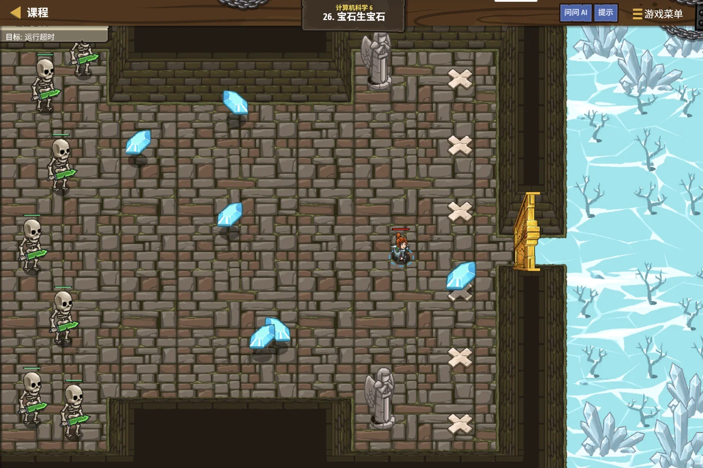

故事：云梯旁的宝库里堆着各种宝石，每种数量差得很多。
贺舒曼把镜子一转：我要给每种宝石刻一个编号。
数量多的刻短一点、数量少的刻长一点，整箱记下来才省地方。
你想起刚才学的办法：那就把数量最少的那两种先并成一组，
一层层往上并。
对。她点头，并到最后剩一棵树，每个宝石的编号就写在树叶上了。
扣哒考级 · GESP C++ 六级 · 第 2 单元 | 云髓天阶 CLOUDMARROW STEPS
云叶密钥 哈夫曼树与基于树的编码
Huffman & Tree Codes

贺舒曼
镜中先知 · 你的向导
云层中飘着一片叶片森林。
贺舒曼举起镜子，镜面里映出无数叶片——每片叶子的边缘都刻着一串 0 和 1。
你凑近看：奇怪……刻着"云"的那片只有一道刻痕，刻着"髓"的却有三道。
因为"云"字出现得多。她合上镜子，常用的刻短一点， 罕见的才刻长一点——这样整段话才写得省。
贺舒曼举起镜子，镜面里映出无数叶片——每片叶子的边缘都刻着一串 0 和 1。
你凑近看：奇怪……刻着"云"的那片只有一道刻痕，刻着"髓"的却有三道。
因为"云"字出现得多。她合上镜子，常用的刻短一点， 罕见的才刻长一点——这样整段话才写得省。
贺舒曼 · 镜中先知
上一课我们认识了树。这一课看树的第一个漂亮应用：编码。怎么把一段文字变成 0 和 1，而且变得尽量短——答案就挂在一棵树上。
顺带还会遇到一个有趣的编码：格雷码，相邻两个码只差一位。
assets/illustrations/py-L6-02-01_cloud_leaf_key.webp
【配图位】云层中飘浮着一片叶片森林，所有叶子从同一根主脉分叉而出、形成一棵巨大的树形；每片叶子边缘刻着由短到长的 0/1 刻痕，出现频率高的叶片刻痕很短、位置靠近主脉上端，罕见的叶片刻痕细长、位置更靠下；一根丝线上垂挂着一把半透明的钥匙，一名戴眼镜的先知伸手托住一片叶子细看。
0 单元导语与目标
Unit Overview
0.1 学习目标
1学完这个单元，你将能……
- 说清定长编码浪费在哪里
- 说出前缀码的含义与作用
- 按哈夫曼算法一步步构造出编码树
- 算出一棵哈夫曼树的 WPL
- 说出哈夫曼树的结点个数规律
- 用反射法生成 n 位格雷码
2对标 GESP 考纲（C++ 六级）
- 理解编码的概念与定长 / 变长编码的区别
- 掌握前缀码的原理
- 掌握哈夫曼树的构造过程与 WPL 的计算
- 了解格雷码的性质与生成方法
- 考核目标：能构造哈夫曼树、能算 WPL、能跟踪格雷码的生成
0.2 考纲对照
| 本单元小节 | 对应考纲条目 | 真题常考形式 |
|---|---|---|
| 1 定长编码的浪费 | 编码的意义 | 为什么变长编码更省 |
| 2 前缀码 | 前缀码 | 判断一组码是不是前缀码 |
| 3 哈夫曼树的构造 | 哈夫曼算法 | 按频率一步步合并；结点个数 |
| 4 从树到编码 | 编码的产生与 WPL | 算出 WPL；给叶子结点写码（必考） |
| 5 格雷码 | 格雷码 | 生成过程的填空；相邻只差一位（必考） |
1 定长编码的浪费
Fixed-Length Codes
1.1 每个符号都用一样长
定长编码：简单，但不够聪明
TEXT
假设要编码 4 个符号：A、B、C、D
【定长编码】每个都用 2 位：
A = 00 B = 01 C = 10 D = 11
一共 4 个符号 → 需要 2 位（因为 2² = 4）
【问题】假设这段文字里 A 出现 1000 次，D 只出现 1 次：
A 用了 2 位 —— 可它出现 1000 次！
D 也用了 2 位 —— 可它只出现 1 次！
总长度 = (1000 + 1) × 2 = 2002 位
如果让 A 只用 1 位、D 用 3 位：
总长度 = 1000 × 1 + 1 × 3 = 1003 位 ← 省了将近一半！
★ 关键发现：定长编码对"每个符号一视同仁"，
可现实中符号出现的频率差别很大。定长的两个毛病
① 不管频率，一律同样长度，高频符号吃了亏；
② 想加一个符号，所有码都得变长（4 个符号 2 位，5 个就得 3 位）
② 想加一个符号，所有码都得变长（4 个符号 2 位，5 个就得 3 位）
1.2 换个思路：常用的短、罕见的才长
变长编码的核心想法：
给出现频率高的符号分配短的编码，
给频率低的符号分配长的编码。
这样一来，出现得最多的符号占的位数最少—— 整段文字的总长度自然就下来了。
这就像给"最常穿的那双鞋"放在门口，不常穿的才收进柜子深处。
这样一来，出现得最多的符号占的位数最少—— 整段文字的总长度自然就下来了。
这就像给"最常穿的那双鞋"放在门口，不常穿的才收进柜子深处。
打个比方：
变长编码就像给常用字起简称——说"北大"、"清华"比说全称省事得多。
但如果简称起得不好，就会出现歧义： 比如"北大"到底指"北京大学"还是"北大荒"？
所以变长编码必须解决一个问题：怎么保证解码时不产生歧义。 答案就是下一节的"前缀码"。
但如果简称起得不好，就会出现歧义： 比如"北大"到底指"北京大学"还是"北大荒"？
所以变长编码必须解决一个问题：怎么保证解码时不产生歧义。 答案就是下一节的"前缀码"。
2 前缀码
Prefix Codes
2.1 什么叫前缀码
前缀码的定义：
在一组编码里，任何一个编码都不是另一个编码的前缀——
满足这个条件的一组编码就叫前缀码。
"前缀"指的是"开头那一段"。 比如
换个说法： 没有任何一个编码，是另一个编码的"开头"。
"前缀"指的是"开头那一段"。 比如
01 就是 011 的前缀。换个说法： 没有任何一个编码，是另一个编码的"开头"。
看两组编码，哪个是前缀码
TEXT
【不是前缀码的例子】
A = 0
B = 01
C = 10
★ A 的编码 "0" 是 B 的编码 "01" 的开头 —— 违反规则！
问题在哪？读到 "01" 时：
可以先解出 A(0)，再解出剩下那个 "1"……可是 "1" 没定义；
也可以整个当成 B(01)。
→ 有歧义，没法确定怎么切分。
【是前缀码的例子】
A = 0
B = 10
C = 11
★ 没有任何一个是另一个的前缀
读到 "0110" 时：
第一位是 0 → 一定是 A
剩下 "110"：开头是 11 → 一定是 C，剩下 "0" → 又是 A
→ 唯一的解析：A C A ✔ 毫无歧义好处
前缀码可以"从前往后一位位读，一确定就切下来"，不需要回头、不需要猜
2.2 为什么必须有这条规矩
为什么"前缀码"就能保证无歧义？
假设你正在从左往右读一串 0 和 1。
每读一位，就去编码表里找"有没有正好匹配的码"。
因为没有任何码是别人的前缀，所以：一旦你读到了一串能匹配的位， 就可以立刻确定"它就是这个符号"，不用再往后看——因为后面不可能再拼出一个更长的匹配。
于是解码变成了一件很机械的事：读到能对上就切一刀，继续往下读。
反过来说：只要有一对"前缀关系"，解码时就一定存在"可以这样切、也可以那样切"的分歧。
因为没有任何码是别人的前缀，所以：一旦你读到了一串能匹配的位， 就可以立刻确定"它就是这个符号"，不用再往后看——因为后面不可能再拼出一个更长的匹配。
于是解码变成了一件很机械的事：读到能对上就切一刀，继续往下读。
反过来说：只要有一对"前缀关系"，解码时就一定存在"可以这样切、也可以那样切"的分歧。
前缀码和二叉树，天生是一对。
把树上的路径当成编码：
往左走记 0、往右走记 1。
那么从根走到某个叶子的那串 0/1，就是这个叶子的编码。
为什么这一定是前缀码？ 因为要走到一个叶子，中途经过的那些结点（都不是叶子）—— 它们的路径当然都是这个叶子编码的前缀，可它们并不是编码（只有叶子才算符号）。
所以"码只能是叶子"，就自动保证了前缀码成立。
那么从根走到某个叶子的那串 0/1，就是这个叶子的编码。
为什么这一定是前缀码？ 因为要走到一个叶子，中途经过的那些结点（都不是叶子）—— 它们的路径当然都是这个叶子编码的前缀，可它们并不是编码（只有叶子才算符号）。
所以"码只能是叶子"，就自动保证了前缀码成立。
3 哈夫曼树的构造
Building the Huffman Tree
3.1 每次合并最小的两个
哈夫曼算法的步骤（每次做同样一件事）：
① 把所有符号按频率排好，各自当成一棵只有一个结点的树；
② 挑出频率最小的两棵，把它们合并成一棵新树—— 新树的根结点，权值是两个孩子权值之和；
③ 把这棵新树放回候选里，重复第 ② 步；
④ 直到只剩下一棵树——它就是哈夫曼树。
一句话：每次都把最小的两个"绑在一起"，直到全部绑成一棵。
② 挑出频率最小的两棵，把它们合并成一棵新树—— 新树的根结点，权值是两个孩子权值之和；
③ 把这棵新树放回候选里，重复第 ② 步；
④ 直到只剩下一棵树——它就是哈夫曼树。
一句话：每次都把最小的两个"绑在一起"，直到全部绑成一棵。
为什么"合并最小的两个"是对的
TEXT
直觉：频率越低的符号，越该待在"更深的"位置（编码更长）。
· 最小的两个频率，将来会处于最深的那一层
· 把最小的两个先合并，等于把它们"推到最深处"
· 而合并出来的新权值（两数之和）再参与后续比较，
相当于"越晚被合并的，位置越靠上"（编码越短）
所以"每次挑最小的两个"这个动作，正好让
频率小的 → 沉到下面（长码）
频率大的 → 留到后面才被合并（短码）
★ 这也是一次"贪心"：每一次都选当前最合适的两个，选完不回头。注意
哈夫曼算法是"贪心算法"的一个经典例子——
而它恰好能证明"这么做一定得到最优的编码方案"。
3.2 走一遍例子
4 个符号：A 出现 5 次、B 2 次、C 1 次、D 3 次
TEXT
初始候选：A(5) B(2) C(1) D(3)
【第 1 次合并】挑最小的两个：C(1) 和 B(2)
合并成 (C+B)，权值 = 1 + 2 = 3
候选变成：A(5) D(3) (C+B)(3)
【第 2 次合并】挑最小的两个：D(3) 和 (C+B)(3)
（两个都是 3，挑哪对都行，但结果形状可能不同）
合并成 (D+(C+B))，权值 = 3 + 3 = 6
候选变成：A(5) (D(CB))(6)
【第 3 次合并】挑最小的两个：A(5) 和 (D(CB))(6)
合并成根，权值 = 5 + 6 = 11
候选只剩一棵 —— 这就是哈夫曼树
【画出来】
根(11)
/ \
A(5) (6)
/ \
D(3) (3)
/ \
C(1) B(2) ← 注意 C 比 B 小，放左边
★ 4 个叶子 → 一共 4 + 3 = 7 个结点规律
因为每次合并都会"多出一个新结点、少掉两棵树"—— 合并 n−1 次，就多出 n−1 个内部结点
n 个叶子的哈夫曼树，一共有 2n − 1 个结点因为每次合并都会"多出一个新结点、少掉两棵树"—— 合并 n−1 次，就多出 n−1 个内部结点
图 2（SVG）：哈夫曼树的构造过程
assets/illustrations/py-L6-02-02_huffman_merge.webp
【配图位】云海中的叶片森林前，几片标着不同刻痕数量的叶子飘浮着；一只发光的手正把两片刻痕最少的叶子用一根细藤绑成一束，藤结上浮现出更小的数字（表示两数之和）；远处还有几片叶子按刻痕多少依次排开、等着被绑；一名戴眼镜的先知站在一旁举着镜子观察。
4 从树到编码
From Tree to Code
4.1 左 0 右 1
把上面那棵哈夫曼树翻译成编码
TEXT
规则：从根出发，往左走记 0、往右走记 1，
走到某个叶子时，沿途那串 0/1 就是它的编码。
根(11)
/ \
A(5) (6)
/ \
D(3) (3)
/ \
C(1) B(2)
【A 的编码】根 → 左 → 到了
A = 0 （1 位）
【D 的编码】根 → 右 → 左 → 到了
D = 10 （2 位）
【C 的编码】根 → 右 → 右 → 左 → 到了
C = 110 （3 位）
【B 的编码】根 → 右 → 右 → 右 → 到了
B = 111 （3 位）
★ 检查频率与长度的关系：
A 出现 5 次（最多）→ 编码最短（1 位）✔
B、C 出现最少 → 编码最长（3 位）✔
完全符合"高频短码、低频长码"。验证它是前缀码
所以这串编码可以放心地拼起来，解码时不会有歧义
0、10、110、111——
没有任何一个是另一个的开头 ✔所以这串编码可以放心地拼起来，解码时不会有歧义
4.2 带权路径长度 WPL
WPL（Weighted Path Length，带权路径长度）：
它的含义就是：用这套编码来写这段文字，总共要写多少位。
哈夫曼树的一个漂亮性质是： 在所有可能的二叉树里，它的 WPL 是最小的—— 所以它给出的编码方案是最省的。
WPL = Σ (每个叶子的权值 × 这个叶子的深度)它的含义就是：用这套编码来写这段文字，总共要写多少位。
哈夫曼树的一个漂亮性质是： 在所有可能的二叉树里，它的 WPL 是最小的—— 所以它给出的编码方案是最省的。
算一算上面这棵树的 WPL
TEXT
各叶子的权值与深度：
A：权值 5，深度 1 → 5 × 1 = 5
D：权值 3，深度 2 → 3 × 2 = 6
C：权值 1，深度 3 → 1 × 3 = 3
B：权值 2，深度 3 → 2 × 3 = 6
WPL = 5 + 6 + 3 + 6 = 20
【另一种算法】把所有"内部结点"的权值加起来：
内部结点：(C+B)=3、(D(CB))=6、根=11
3 + 6 + 11 = 20 ✔ 结果完全一样！
★ 这个"内部结点之和"的算法很好用，
因为它不需要去数每个叶子的深度。WPL = 20
含义：这段文字用这套编码写出来，一共 20 位
对比定长编码 每个符号 2 位，总共 (5+2+1+3) = 11 个字符 → 22 位
哈夫曼省了 2 位——文字越长，省得越多
对比定长编码 每个符号 2 位，总共 (5+2+1+3) = 11 个字符 → 22 位
哈夫曼省了 2 位——文字越长，省得越多
WPL 的两种算法，为什么相等？
换一个角度看深度：
一个叶子在深度 d，就意味着从根到它要经过 d 条边——
也就是"它被包在 d 个内部结点里面"。
所以所有叶子的权值 × 深度加起来， 等价于每个内部结点的权值各被数了若干次、加起来。
而每个内部结点的权值恰好等于它下面所有叶子权值之和—— 两边的总账一样。
考试里"数内部结点之和"往往更快，因为不用一个个数深度。
所以所有叶子的权值 × 深度加起来， 等价于每个内部结点的权值各被数了若干次、加起来。
而每个内部结点的权值恰好等于它下面所有叶子权值之和—— 两边的总账一样。
考试里"数内部结点之和"往往更快，因为不用一个个数深度。
5 格雷码
Gray Code
5.1 相邻只差一位
格雷码的特点：
在把
看 2 位格雷码：
检查一下：
（注意：若首尾也算相邻，
2ⁿ 个 n 位二进制串排成一列时，
让"相邻两个串"只相差一位——
这样的排列就叫 n 位格雷码。看 2 位格雷码：
00 → 01 → 11 → 10检查一下：
00 → 01：只差第 2 位（0 变 1）✔01 → 11：只差第 1 位 ✔11 → 10：只差第 2 位 ✔（注意：若首尾也算相邻，
10 → 00 也只差第 1 位——所以它是"循环格雷码"。）
最容易搞错的一句：
"n 位格雷码中，任意两个编码之间都只相差一个二进制位"——这句话是错的。
正确的说法是： "相邻两个编码之间只相差一位。"
举反例：2 位格雷码里，
所以"任意两个"这个范围放得太大了，必须限定为"相邻"。
这个"只差一位"的性质有什么实际用？ 硬件里计数时，如果每次只有一位在变，就不容易出现"中间状态"的错误—— 这就是格雷码在工程上的价值。
正确的说法是： "相邻两个编码之间只相差一位。"
举反例：2 位格雷码里，
00 和 11
相差两位——而它们在这个序列里隔了一个 01。所以"任意两个"这个范围放得太大了，必须限定为"相邻"。
这个"只差一位"的性质有什么实际用？ 硬件里计数时，如果每次只有一位在变，就不容易出现"中间状态"的错误—— 这就是格雷码在工程上的价值。
5.2 反射法生成
从 n−1 位推出 n 位：反射法
TEXT
【做法】有了 n−1 位的格雷码，这样长出 n 位的：
① 把已有的序列先原样留着；
② 再"倒着抄一遍"（这就是"反射"），
但在每个抄来的串前面加个 "1"；
③ 原来那批，在前面统一加个 "0"。
【从 1 位推出 2 位】
1 位： 0 1
↓ 倒着抄并加 "1"： "1"+"1" = 11，"1"+"0" = 10
↓ 原来的加 "0"： "0"+"0" = 00，"0"+"1" = 01
→ 2 位： 00 01 11 10 ✔ 正是上面那串
【从 2 位推出 3 位】
2 位： 00 01 11 10
倒着加 "1"：100 111 101 110
原来加 "0"：000 001 011 010
→ 3 位：000 001 011 010 110 101 111 100
★ 为什么"倒着抄"就对了？
因为倒着抄之后，抄来那一段和原来那一段的"接缝处"
正好是两个只差第一位的串（原串最后一位和倒抄的第一位）。
而加前缀不会改变"原序列内部相邻只差一位"这个性质。关键动作
倒着遍历已有的串，把它们加上前缀
顺序不能颠倒：必须"先追加，后加前缀"
"1" 接到后面；
原来的串统一加上前缀 "0"顺序不能颠倒：必须"先追加，后加前缀"
代码实现（真题原题）
C++
vector<string> gray(int n) {
vector<string> ans = {"0", "1"};
for (int bit = 2; bit <= n; ++bit) {
int oldSize = ans.size();
for (int i = oldSize - 1; i >= 0; --i)
ans.push_back(__________________); // ★ "1" + ans[i]
for (int i = 0; i < oldSize; ++i)
ans[i] = "0" + ans[i];
}
return ans;
}横线上填
顺序很重要 必须"先追加带 1 的、后给原有的加 0"—— 如果先加 0，那追加的时候取到的就是已经加过 0 的串，全乱了。
"1" + ans[i]
后面的循环又给原来那批串统一加了 "0"，两边正好配对顺序很重要 必须"先追加带 1 的、后给原有的加 0"—— 如果先加 0，那追加的时候取到的就是已经加过 0 的串，全乱了。
assets/illustrations/py-L6-02-03_gray_code.webp
【配图位】云海中的环形阶梯盘旋上升，每一级台阶面都刻着一串发光符文（0/1 组成的位模式）；仔细观察会发现上下相邻两级台阶上，只有一个符文的位置被点亮或熄灭、其余完全一致；一名戴眼镜的先知正踩着台阶一级级向上攀登，手中的镜子映出台阶上那唯一的差异点。
6 代码实战
Level Practice
关卡
宝石生宝石
进入关卡 →思路：用优先队列（小根堆）来实现"每次挑最小的两个"， 一边合并一边累加 WPL。

assets/stages/py-L6-02-stage1_gems_gems.webp
【截图位】宝石生宝石关卡：云梯宝库与宝石堆同框，代码编辑区可见优先队列与合并循环。
哈夫曼树的构造 + WPL 计算
C++
#include <iostream>
#include <queue>
#include <vector>
using namespace std;
int main() {
int n;
cin >> n;
// 小根堆：每次取出的一定是最小的
priority_queue<long long, vector<long long>, greater<long long>> pq;
for (int i = 0; i < n; i++) {
long long x;
cin >> x;
pq.push(x);
}
long long wpl = 0;
while (pq.size() > 1) {
long long a = pq.top(); pq.pop(); // 最小的
long long b = pq.top(); pq.pop(); // 第二小的
long long s = a + b; // 合并成新结点
wpl += s; // ★ 所有内部结点之和 = WPL
pq.push(s); // 放回候选
}
cout << wpl << endl;
return 0;
}输入 4 / 5 2 1 3 输出 20
和上面手算的结果完全一致（内部结点 3 + 6 + 11 = 20）
和上面手算的结果完全一致（内部结点 3 + 6 + 11 = 20）
和本单元的关系：
"每次挑最小的两个"用优先队列实现最自然——它保证取出来的永远是当前最小的。
而
这样就不需要真的把树建出来、再一个个数叶子的深度—— 代码短了一大截。
复杂度：
去扣哒世界闯这一关 →
而
wpl += s 这一行用了一个漂亮的等价关系：
WPL = 所有内部结点的权值之和。
因为合并出来的每个新结点就是一个内部结点，把它累加进 wpl 就行了。这样就不需要真的把树建出来、再一个个数叶子的深度—— 代码短了一大截。
复杂度：
O(n log n)——
n 次入堆出堆，每次 O(log n)。
7 常见陷阱
Common Pitfalls

扣哒鸭 · 调试官
哈夫曼和格雷码的坑，都藏在"细节的顺序"里。四条。
1
以为"任意两个编码只差一位"是格雷码的性质。

扣哒鸭：真正的性质是
"相邻两个编码之间只差一位"。
反例：2 位格雷码里，
"任意两个"这个范围太大了——判断题里专挑这种地方下手。
反例：2 位格雷码里，
00 和 11 差了两位。"任意两个"这个范围太大了——判断题里专挑这种地方下手。
准确表述：相邻两个编码只差一位
2
格雷码生成时，把"追加"和"加前缀"的先后顺序写反了。

扣哒鸭：必须
先倒着遍历、把带
然后再给原来那批串统一加上
先加 0 的话，追加时取到的是已经加过 0 的串——整个序列就乱了。
"1" 前缀的串追加到末尾；然后再给原来那批串统一加上
"0" 前缀。先加 0 的话，追加时取到的是已经加过 0 的串——整个序列就乱了。
顺序：先 push 带 "1" 的，后改原有的为 "0"+
3
构造哈夫曼树时，把"合并后的新权值"忘了放回去。

扣哒鸭：关键的一步是贪心的动作：
把两个最小的合并之后，这个"和"要作为新的一项放回候选里、继续参与比较。
忘了放回去，后面的合并就全错了——树也建不出来。
忘了放回去，后面的合并就全错了——树也建不出来。
正确做法：合并后
pq.push(s) 放回4
以为哈夫曼树只有唯一一种形状。

扣哒鸭：不是。
如果候选中出现"两个一样大的权值"，挑哪两个合并会得到不同的树形。
而且左、右孩子的摆放方式不同，得到的编码也不同。
所以：字符频率相同时，得到的编码不一定完全相同。 但它们的 WPL（总长度）一定相同、都是最小的。
而且左、右孩子的摆放方式不同，得到的编码也不同。
所以：字符频率相同时，得到的编码不一定完全相同。 但它们的 WPL（总长度）一定相同、都是最小的。
记牢：哈夫曼编码不唯一，但 WPL 唯一且最小
8 题目练习
Practice
前 3 题改编自 C++ 六级真题，其余为原创练习题。
改编自 2026 年 9 月 · C++ 六级 · 第 12 题单选题
下面代码用反射法生成 n 位格雷编码，横线处应填写（ ）。
vector<string> gray(int n) {
vector<string> ans = {"0", "1"};
for (int bit = 2; bit <= n; ++bit) {
int oldSize = ans.size();
for (int i = oldSize - 1; i >= 0; --i)
ans.push_back(__________________________);
for (int i = 0; i < oldSize; ++i)
ans[i] = "0" + ans[i];
}
return ans;
}
A.
C.
ans[i] + "1" B."0" + ans[i]C.
"1" + ans[i] D.ans[oldSize - i - 1]
查看答案与详解
答案：C。要看清这段代码在做什么。
它一共做两件事：
① 倒着遍历已有的串（
② 再给原来那批串统一加上前缀
所以第 ① 步里追加的，必须是"加了
验算（n = 2）：初始
i = 1：追加
i = 0：追加
再给前两个加 "0"：
A 项把前缀加在了后面（
B 项和后面那句重复加了 "0"；
D 项取的是"倒序的原来的串"，前缀问题根本没处理，而且重复取了同一个方向。
这道题的关键： 看清"追加"和"加前缀"是两批不同的处理， 顺序绝对不能颠倒——先追加带 "1" 的，再给原有的加 "0"。
对应小节5.2 反射法生成。
它一共做两件事：
① 倒着遍历已有的串（
i 从 oldSize−1 到 0），
把处理过的结果追加到末尾——这就是"反射"（把原序列倒着抄一份）；② 再给原来那批串统一加上前缀
"0"。所以第 ① 步里追加的，必须是"加了
"1" 前缀"的那一批 ✔
这就是 C 项 "1" + ans[i]。验算（n = 2）：初始
ans = {"0", "1"}，oldSize = 2i = 1：追加
"1" + "1" = "11" → {"0","1","11"}i = 0：追加
"1" + "0" = "10" → {"0","1","11","10"}再给前两个加 "0"：
{"00","01","11","10"} ——
正是 2 位格雷码 ✔A 项把前缀加在了后面（
ans[i] + "1"）——
那会让整串的补位不在最前面，破坏了"相邻只差一位"的性质；B 项和后面那句重复加了 "0"；
D 项取的是"倒序的原来的串"，前缀问题根本没处理，而且重复取了同一个方向。
这道题的关键： 看清"追加"和"加前缀"是两批不同的处理， 顺序绝对不能颠倒——先追加带 "1" 的，再给原有的加 "0"。
对应小节5.2 反射法生成。
改编自 2026 年 9 月 · C++ 六级 · 判断题 第 9 题判断题
哈夫曼编码的生成过程基于贪心算法，
出现频率越高的字符，其编码长度一定不会比出现频率更低的字符更长。（ ）
查看答案与详解
答案：正确（√）。这正是哈夫曼算法"省钱"的根本原因。
回想一下构造过程： 每次都是把"当前权值最小的两个"合并在一起。
这意味着什么？ 频率最小的一批符号，最早被合并、也最容易被一次次往上合并—— 于是它们被"推"到了树的最深处，编码最长。
而频率最大的符号权值大，往往要等到最后才被合并—— 它离根近，编码短。
所以"频率越高 → 编码越短（或不更长）"这个规律是必然的。
举上面那个例子验证： A(5) 编码 1 位、D(3) 是 2 位、B(2) 和 C(1) 都是 3 位——完全符合 ✔
为什么要这样设计？ 因为整段文字的总长度 = Σ(频率 × 编码长度)—— 让高频的乘以小的长度，总和自然最小。
顺便澄清一句： "不会更长"这个说法比"一定更短"更严谨—— 因为两个频率相同的符号，编码长度可能一样。
对应小节3.1 每次合并最小的两个。
回想一下构造过程： 每次都是把"当前权值最小的两个"合并在一起。
这意味着什么？ 频率最小的一批符号，最早被合并、也最容易被一次次往上合并—— 于是它们被"推"到了树的最深处，编码最长。
而频率最大的符号权值大，往往要等到最后才被合并—— 它离根近，编码短。
所以"频率越高 → 编码越短（或不更长）"这个规律是必然的。
举上面那个例子验证： A(5) 编码 1 位、D(3) 是 2 位、B(2) 和 C(1) 都是 3 位——完全符合 ✔
为什么要这样设计？ 因为整段文字的总长度 = Σ(频率 × 编码长度)—— 让高频的乘以小的长度，总和自然最小。
顺便澄清一句： "不会更长"这个说法比"一定更短"更严谨—— 因为两个频率相同的符号，编码长度可能一样。
对应小节3.1 每次合并最小的两个。
改编自 2026 年 9 月 · C++ 六级 · 判断题 第 8 题判断题
在 n 位格雷码中，任意两个编码之间都只相差一个二进制位。（ ）
查看答案与详解
答案：错误（×）。错在"任意两个"这个范围上——应该限定为"相邻两个"。
正确的说法： "n 位格雷码中，相邻的两个编码之间只相差一个二进制位。"
举个反例就清楚了：2 位格雷码是
相邻的：
但不相邻的：
所以题目说的"任意两个"，显然不成立。
这类判断题的套路是： 把"相邻"换成"任意两个"、"全部"、"都"这类词， 把范围悄悄放大——一放大就错。 看到"任意""都""一定"这些字眼，先想一想有没有反例。
对应小节5.1 相邻只差一位。
正确的说法： "n 位格雷码中，相邻的两个编码之间只相差一个二进制位。"
举个反例就清楚了：2 位格雷码是
00 → 01 → 11 → 10。相邻的：
00→01 差一位 ✔、
01→11 差一位 ✔、
11→10 差一位 ✔；但不相邻的：
00 和 11 ——
它们差了整整两位！（从 00 到 11，两个位置都变了）所以题目说的"任意两个"，显然不成立。
这类判断题的套路是： 把"相邻"换成"任意两个"、"全部"、"都"这类词， 把范围悄悄放大——一放大就错。 看到"任意""都""一定"这些字眼，先想一想有没有反例。
对应小节5.1 相邻只差一位。
原创练习题单选题
对 4 个字符进行哈夫曼编码，它们的出现频率分别是
5、2、1、3。按哈夫曼算法构造编码树，
其最小带权路径长度 WPL 为（ ）。A.
11 B.16 C.20 D.22查看答案与详解
答案：C。两个办法都能算，推荐第二个（更快）。
【办法一】按深度算：
最小的两个 1 和 2 先合并 → 得到 3；
再把 3 和剩下的 3 合并 → 得到 6；
最后 6 和 5 合并 → 得到 11。
所以树的形状是：
【办法二】把所有内部结点相加：
内部结点依次是
D 项（22）是"定长编码"的长度： 4 个字符每个 2 位，总频率 11，
A 项（11）是总频率（也就是所有叶子权值之和），不是 WPL。
对应小节4.2 带权路径长度 WPL。
【办法一】按深度算：
最小的两个 1 和 2 先合并 → 得到 3；
再把 3 和剩下的 3 合并 → 得到 6；
最后 6 和 5 合并 → 得到 11。
所以树的形状是：
5 在深度 1、3 在深度 2、
1 和 2 都在深度 3。WPL = 5×1 + 3×2 + 1×3 + 2×3 = 5 + 6 + 3 + 6 = 20 ✔【办法二】把所有内部结点相加：
内部结点依次是
3、6、11，
3 + 6 + 11 = 20 ✔
——和深度算法结果完全一样，但不用数深度。D 项（22）是"定长编码"的长度： 4 个字符每个 2 位，总频率 11，
11 × 2 = 22。
哈夫曼省了 2 位——这正是变长编码的价值。A 项（11）是总频率（也就是所有叶子权值之和），不是 WPL。
对应小节4.2 带权路径长度 WPL。
原创练习题判断题
一组编码
0、10、110、111 是前缀码。（ ）查看答案与详解
答案：正确（√）。逐个检查"有没有谁是别人的前缀"：
四个编码互不为前缀，所以它是前缀码 ✔
它其实正对应一棵哈夫曼树： 左孩子记 0、右孩子记 1，从根走到四个叶子，得到的正是
反过来也要记住这个对应关系： "一组前缀码"和"一棵二叉树的叶子"是一一对应的。 所以看到一组长得很像"左 0 右 1"的编码，就可以想它背后那棵树。
验证一下它能无歧义解码：拿到
对应小节2.1 什么叫前缀码。
0 —— 其他三个都以 1 开头，没有以此开头的 ✔10 —— 另外两个是 110 和 111，
都以 11 开头，不是 10 ✔110 —— 剩下的 111 不是以 110 开头 ✔111 —— 没有比它更长的了 ✔四个编码互不为前缀，所以它是前缀码 ✔
它其实正对应一棵哈夫曼树： 左孩子记 0、右孩子记 1，从根走到四个叶子，得到的正是
0、10、110、111。反过来也要记住这个对应关系： "一组前缀码"和"一棵二叉树的叶子"是一一对应的。 所以看到一组长得很像"左 0 右 1"的编码，就可以想它背后那棵树。
验证一下它能无歧义解码：拿到
011010——
第一位 0 → 是第一个符号；剩下 11010：开头 110 → 第三个符号；
剩下 10 → 第二个符号。唯一的切分，毫无歧义。对应小节2.1 什么叫前缀码。
原创练习题单选题
一棵哈夫曼树共有
199 个结点，
则它的叶子结点有（ ）个。A.
50 B.99 C.100 D.198查看答案与详解
答案：C。用那条结点个数规律：
设叶子数为
这条规律是怎么来的？
哈夫曼树是一棵"严格二叉树"—— 每个内部结点都有且仅有两个孩子（因为每次都是把两棵合并成一棵）。
而每次合并会"消耗两棵树、产生一个新结点"—— 合并 n−1 次，就多出 n−1 个内部结点。
所以总结点数 = n 个叶子 + (n−1) 个内部结点 = 2n − 1 ✔
D 项（198）是把公式记成了
这条规律在选择题里出现得非常多，建议直接记住
对应小节3.2 走一遍例子。
n 个叶子的哈夫曼树一共有 2n − 1 个结点。设叶子数为
n，则 2n − 1 = 199，
解得 2n = 200，n = 100 ✔这条规律是怎么来的？
哈夫曼树是一棵"严格二叉树"—— 每个内部结点都有且仅有两个孩子（因为每次都是把两棵合并成一棵）。
而每次合并会"消耗两棵树、产生一个新结点"—— 合并 n−1 次，就多出 n−1 个内部结点。
所以总结点数 = n 个叶子 + (n−1) 个内部结点 = 2n − 1 ✔
D 项（198）是把公式记成了
2n − 2；
B 项（99）把 n − 1（内部结点数）当成了叶子数。这条规律在选择题里出现得非常多，建议直接记住
2n − 1。对应小节3.2 走一遍例子。
原创练习题编程题
题目要求：读入
样例：输入
n 个字符的出现频率，
输出按哈夫曼算法构造出的树的最小带权路径长度 WPL。样例：输入
4 / 5 2 1 3，
输出 20。查看参考答案与要点
#include <iostream>
#include <queue>
#include <vector>
using namespace std;
int main() {
int n;
cin >> n;
// 小根堆：top() 永远是最小的
priority_queue<long long, vector<long long>, greater<long long>> pq;
for (int i = 0; i < n; i++) {
long long x;
cin >> x;
pq.push(x);
}
long long wpl = 0;
while (pq.size() > 1) { // 一直合并到只剩一个
long long a = pq.top(); pq.pop();
long long b = pq.top(); pq.pop();
long long s = a + b; // 新结点的权值
wpl += s; // ★ 内部结点之和就是 WPL
pq.push(s); // ★ 别忘了放回去
}
cout << wpl << endl;
return 0;
}
输入 4 / 5 2 1 3 输出：20
要点：
① 用 priority_queue 加 greater<long long>
构造小根堆——它保证每次 top() 取出来的一定是当前最小的，
正好对上哈夫曼算法"每次挑最小的两个"；
② WPL 不用真的建树再数深度——
用等价关系"WPL = 所有内部结点的权值之和"，
每合并一次就把新权值加进 wpl，代码短很多；
③ pq.push(s) 这一步绝不能忘——
合并出来的新结点还是要放回候选、继续参与后面的比较；
④ 循环条件是 size() > 1——
剩一个的时候就是根，不用再合并了；
⑤ 用 long long——
WPL 可能很大（频率大、字符多的时候会超出 int）。
对应小节3.1 每次合并最小的两个；6 代码实战。
9 本单元小结
Unit Summary
贺舒曼 · 镜中先知
四句话记住这一课：一、定长编码太浪费——高频短码、低频长码才省。
二、变长编码必须满足前缀码（没有任何码是别人的前缀），否则解码会有歧义。
三、哈夫曼树：每次把最小的两个合并；n 个叶子共
2n−1 个结点；
WPL = Σ(权值 × 深度) = 内部结点之和。四、格雷码：相邻两个只差一位（不是"任意两个"）；反射法生成。
密钥配好了。下一站是双路侦骑——那里有两名侦察兵，一个往深里钻，一个往外扩散。
你在云叶之间收获了什么
- 定长编码的毛病——不分频率一律等长，高频符号吃亏。
- 变长编码的思路——高频用短码、低频用长码。
- 前缀码——没有任何一个编码是另一个编码的前缀。
- 为什么需要它——保证解码无歧义：从左往右读，一确定就切。
- 前缀码与二叉树的关系——左 0 右 1，码只能是叶子。
- 哈夫曼算法——每次挑最小的两个合并，直到剩一棵；是贪心。
- 结点个数规律——n 个叶子 → 共
2n − 1个结点。 - 从树到编码——根出发，往左记 0、往右记 1，走到叶子的路径就是编码。
- WPL——
Σ(权值 × 深度)； 等价于"所有内部结点权值之和"。 - 哈夫曼的意义——在所有可能的二叉树里，它的 WPL 最小。
- 哈夫曼编码不唯一——挑哪两个合并可能有不同选择， 但 WPL 一定相同且最小。
- 频率越高编码不会更长——这是它省钱的根据。
- 格雷码——相邻两个编码只差一位（不是"任意两个"）。
- 反射法——倒着抄一份加前缀
"1"， 原有的加前缀"0"；顺序不能颠倒。
下一站：双路侦骑
云海迷宫的入口处站着两名侦察兵——
一个沿窄巷一路直下、走到最底才回头；另一个从云台向外一圈圈扩散，探完一圈才探下一圈。
下一单元我们学DFS 与 BFS：
两种走遍整张地图的办法，以及它们各自适合解决什么问题。